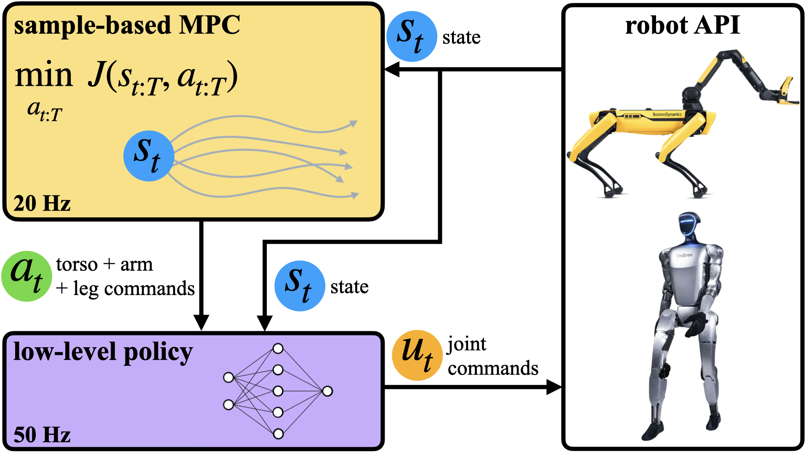
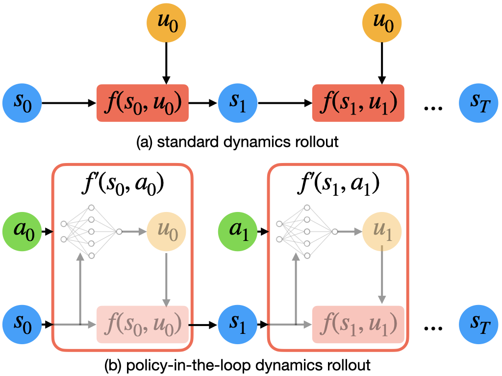
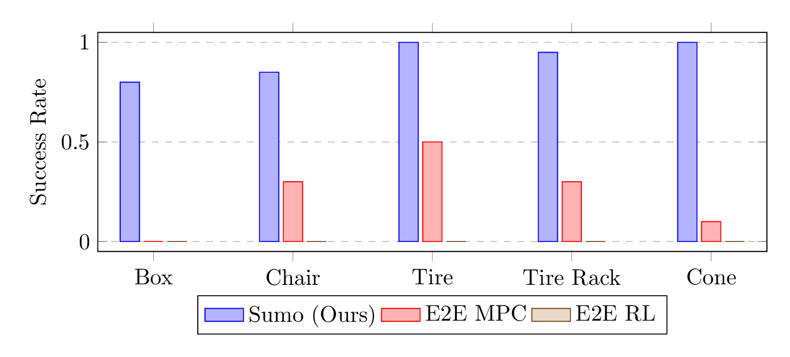
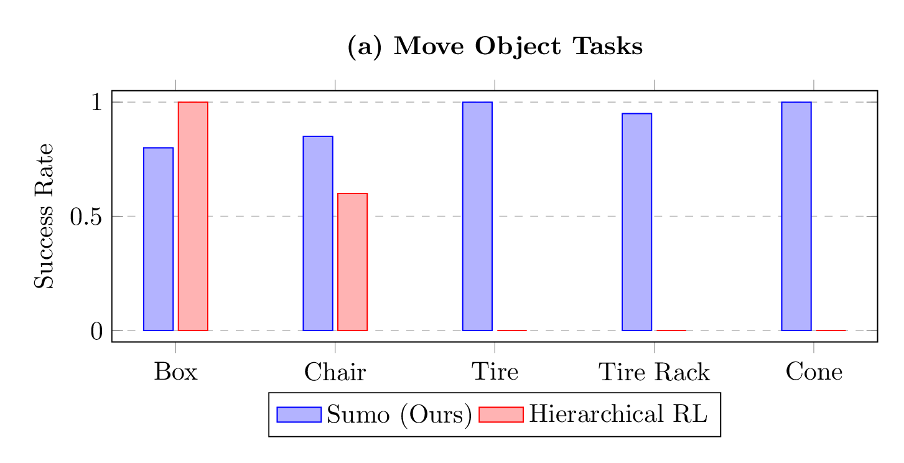
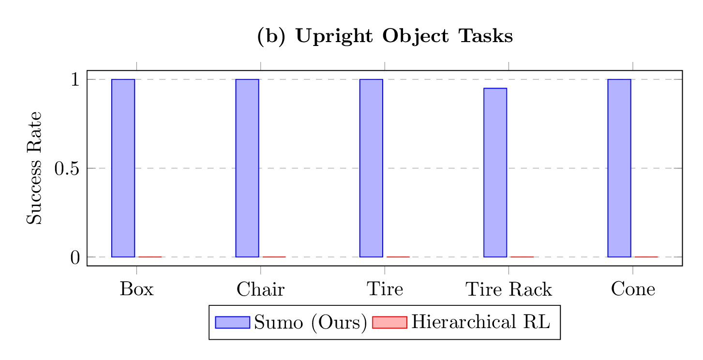

This paper presents a sim-to-real approach that enables legged robots to dynamically manipulate large and heavy objects with whole-body dexterity. Our key insight is that by performing test-time steering of a pre-trained whole-body control policy with a sample-based planner, we can enable these robots to solve a variety of dynamic loco-manipulation tasks. Interestingly, we find our method generalizes to a diverse set of objects and tasks with no additional tuning or training, and can be further enhanced by flexibly adjusting the cost function at test time. We demonstrate the capabilities of our approach through a variety of challenging loco-manipulations tasks on a Spot quadruped robot in the real world, including uprighting a tire heavier than the robot's nominal lifting capacity and dragging a crowd-control barrier larger and taller than the robot itself. Additionally, we show that the same approach can be generalized to humanoid loco-manipulations tasks, such as opening a door and pushing a table, in simulation.


System Overview: (left) Sumo takes an hirarchical approach that combines a pre-trained whole-body control policy (purple) with a high-level sample-based MPC (yellow). The whole-body control policy takes in the current state and desired torso, arm, and leg commands and outputs the joint-level commands for the quadruped or humanoid robots at $50$Hz. The high-level sample-based MPC aims to minimize a task-specific cost function by performing dyanmics rollouts with the policy-in-the-loop (right).
Note: the Spot robot has a peak lift capacity of 11kg and a continuous load capacity of 5kg.
Tire Upright: Lifts a tire to a vertical position. The tire weighs 15 kg, exceeding the robot's peak lifting capacity.
Cone Upright: Upright a traffic cone to a standing position.
Chair Upright: Upright a yellow chair to a standing position. The chair weighs 16.5 kg, exceeding the robot's peak lifting capacity.
Barrier Upright: Upright a crowd control barrier to a standing position. The barrier weighs 16 kg, exceeding the robot's peak lifting capacity, and is larger than the robot itself.
Tire Stack: Stack a tire on top of another. The tires weigh 15 kg each, exceeding the robot's peak lifting capacity.
Barrier Drag: Drag a crowd control barrier to the yellow circle. The barrier weighs 16 kg, exceeding the robot's peak lifting capacity and is larger than the robot itself.
Tire Rack Drag: Drag a tire rack to the yellow circle.
Rugged Box Push: Push a rugged box to the yellow circle. The box weighs 20 kg, exceeding the robot capacity with arm alone under every day friction conditions.
Table Push: Push a table to the goal location.
Chair Push: Push a chair to the goal location.
Door Open: Opening and walking through a door.
Box Push: Push a box to the goal location.

Hierarchical Control is Key for Loco-Manipulation: Sumo (our method) significantly outperforms end-to-end MPC and RL baselines that struggle to maintain balance while manipulating objects.


Test-time Search Enables Generalization: (left) Sumo (our method) generalizes zero-shot to new objects without additional training or changing the reward function by just updating the model online. Hierarchical RL trained on moving a box performs well on the box task, but fails to generalize other shapes, weights, and geometires despite domain randomization. (right) With Sumo, we can change the objective at test time to achieve new behaviors. Here, we replace the goal reward with an orientation reward to enable object upright behaviors. The same hierarchical RL policy on the move objective cannot be easily steered to achieve a new objective.
Object Move Tasks Spot robot moves a tire, a traffic cone, a chair, a box, and a tire rack to the goal location all using the exact same reward function and optimizer.
Object Upright Tasks Spot robot can upright a tire, a traffic cone, a chair, a box, and a tire rack by replacing a simple objective term in the reward function from above.
@article{2025sumo,
title={Sumo: Dynamic and Generalizable Whole-Body Loco-Manipulation},
author={[Authors to be added]},
journal={[Journal/Conference to be added]},
year={2025}
}